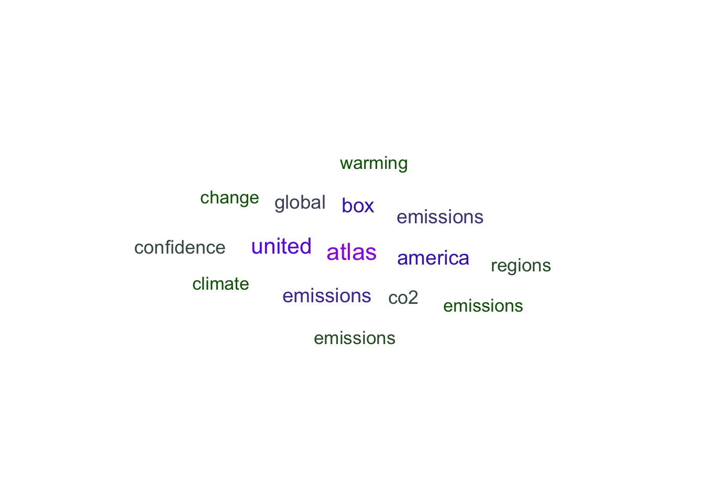

This script uses variables such as plant height, canopy length, canopy width, and the number of green leaves to classify whether palmettos are of species Serenoa repens or Sabal etonia. Binary logistic regression is used to test feasibility.
Data was collected from 1981 to 2017 in south-central Florida. It includes information regarding year, plant type, species, site, habitat, treatment, survival, height, canopy length, canopy width, number of green leaves, scape, new leaves, canopy, if long, comments, and biomass.
Data citation: Abrahamson, W.G. 2019. Survival, growth and biomass estimates of two dominant palmetto species of south-central Florida from 1981 - 2017, ongoing at 5-year intervals ver 1. Environmental Data Initiative. https://doi.org/10.6073/pasta/f2f96ec76fbbd4b9db431c79a770c4d5
library(tidyverse)
library(here)
library(GGally)
library(broom)
library(jtools)
library(caret)
library(AICcmodavg)
library(data.table)
library(knitr)palmetto <- read_csv(here("data", "palmetto.csv")) # Read in the data## Rows: 12460 Columns: 17## ── Column specification ────────────────────────────────────────────────────────
## Delimiter: ","
## chr (1): comments
## dbl (16): year, plant, species, site, habitat, treatment, survival, height, ...##
## ℹ Use `spec()` to retrieve the full column specification for this data.
## ℹ Specify the column types or set `show_col_types = FALSE` to quiet this message.Select columns for use in the analysis, change values in the species column to species names, and convert the species column to a factor class.
palmetto_clean <- palmetto %>% # Clean the data table
select(species, height:green_lvs) %>% # Select only the columns I need for analysis, the colon means "all the way over to"
drop_na()
# Change the values 1 and 2 in the species column to actual species names. 1 = Serenoa repens, 2 = Sabal etonia
palmetto_clean$species <- ifelse(palmetto_clean$species==1,'Serenoa repens','Sabal etonia')
# Convert the species column to a factor class
palmetto_clean$species <- as.factor(palmetto_clean$species)
# levels(palmetto_clean$species) in the console revealed Sabal etonia is factor level 0 and Serenoa repens is factor level 1Differences in height, canopy length, canopy width, and green leaves for Serenoa repens or Sabal etonia.
ggplot(data = palmetto_clean, aes(x = height, y = length)) +
geom_point(aes(color = species)) +
labs(title = 'Distribution of Height vs. Canopy Length of Two Palmetto Species',
x = 'Plant Height (cm)',
y = 'Canopy Length (cm)',
color = "Species") + # title, axis labels, and legend title
theme_minimal() # sets the theme of the graph - for visual purposesFigure 1. The relationship between canopy length (cm) and maximum plant height (cm) is shown for each species. Sabal etonia is shown in red. Serenoa repens is shown in blue.
ggplot(data = palmetto_clean, aes(x = width, y = green_lvs)) +
geom_point(aes(color = species)) +
labs(title = 'Distribution of Canopy Width vs. Number of Green Leaves of Two Palmetto Species',
x = 'Canopy Width (cm)',
y = 'Number of Green Leaves',
color = "Species") + # title, axis labels, and legend title
theme_minimal() # sets the theme of the graph - for visual purposesFigure 2. The relationship between the number of green leaves and canopy width (cm) is shown for each species. Sabal etonia is shown in red. Serenoa repens is shown in blue.
Based on these plots, the number of green leaves is the most likely variable to help classify the species correctly. It shows the most difference between species. Canopy width, plant height, and canopy length showed similar trends between species.
# Store formulas
f1 <- species ~ height + length + width + green_lvs
f2 <- species ~ height + width + green_lvs# Binomial logistic regression for model 1 which includes height + length + width + green_lvs.
palm_blr1 <- glm(formula = f1,
data = palmetto_clean,
family = 'binomial')# Binomial logistic regression for model 2 which includes height + width + green_lvs and does not include length.
palm_blr2 <- glm(formula = f2,
data = palmetto_clean,
family = 'binomial')Compare the models using AICc
AICcmodavg::aictab(list(palm_blr1, palm_blr2)) # this function compares competing models## Warning in aictab.AICglm.lm(list(palm_blr1, palm_blr2)):
## Model names have been supplied automatically in the table##
## Model selection based on AICc:
##
## K AICc Delta_AICc AICcWt Cum.Wt LL
## Mod1 5 5194.57 0.00 1 1 -2592.28
## Mod2 4 5987.48 792.91 0 1 -2989.74Compare with a 10-fold cross-validation, using prediction accuracy as our metric.
# Using `caret` ("**C**lassification **A**nd **RE**gression **T**raining"):
set.seed(123)
# tr_ctrl <- trainControl(method = "cv", number = 10)
tr_ctrl <- trainControl(method = "repeatedcv", number = 10, repeats = 10)
# Train the model
model1 <- train(f1, data = palmetto_clean,
method = "glm", family = 'binomial',
trControl = tr_ctrl)
model2 <- train(f2, data = palmetto_clean,
method = "glm", family = 'binomial',
trControl = tr_ctrl)Model 1 (92% accurate) is more accurate than model 2 (90% accurate) according to 10-fold cross validation.
Based on both AIC values and 10-fold cross validation, model 1 is the better model.
final_mdl <- glm(formula = f1,
data = palmetto_clean,
family = 'binomial')Table 1. Model 1 binary logistic regression model results.
### Get a tidy version w/ broom:
final_mdl_tidy <- broom::tidy(final_mdl)
setnames(final_mdl_tidy, old=c("term","estimate", "std.error", "statistic", "p.value"), new=c("Term","Estimate", "Standard Error", "z-value", "p-value"))
kable(final_mdl_tidy)| Term | Estimate | Standard Error | z-value | p-value |
|---|---|---|---|---|
| (Intercept) | -3.2266851 | 0.1420708 | -22.71180 | 0 |
| height | 0.0292173 | 0.0023061 | 12.66984 | 0 |
| length | -0.0458233 | 0.0018661 | -24.55600 | 0 |
| width | -0.0394434 | 0.0021000 | -18.78227 | 0 |
| green_lvs | 1.9084747 | 0.0388634 | 49.10728 | 0 |
The model is predicting the likelihood that the species is a Serenoa repens because the factor level of Serenoa repens is 1.
All variables are statistically significant.
Higher length and width would be less likely to be Serenoa repens because the value is negative.
Higher height and more green leaves would be more likely to be a Serenoa repens because the value is positive. This makes sense when looking at graphs above.
Table 2. Evaluation of how successfully this model would “classify” a plant as the correct species, using a 50% cutoff.
blr1_fitted <- palm_blr1 %>% # fitted column reports the probability that an individual is a Serenoa repens
broom::augment(type.predict = "response") %>% # instead of taking the log odds we are taking the odds and converting them into a probability
mutate(predicted_species = ifelse(.fitted >= 0.5, "Serenoa repens", "Sabal etonia")) %>%
group_by(species) %>% # separate by species
summarize(number_correctly_identified = sum(species == predicted_species),
number_total = n()) %>% # number_total is needed to identify percent correctly identified
mutate(percent_correctly_identified = number_correctly_identified/number_total * 100) %>%
select(species, number_correctly_identified, percent_correctly_identified)
setnames(blr1_fitted, old=c("species","number_correctly_identified", "percent_correctly_identified"), new=c("Species","Number Correctly Identified", "Percent Correctly Identified"))
kable(blr1_fitted)| Species | Number Correctly Identified | Percent Correctly Identified |
|---|---|---|
| Sabal etonia | 5701 | 92.62388 |
| Serenoa repens | 5548 | 90.77225 |
A binary logistic regression model using plant height, canopy length, canopy width and green leaves as predictor variables is better at predicting palmetto species (Serenoa repens and Sabal etonia) than a model using plant height, canopy width and the number of green leaves. The model correctly identified 5701 (92.62%) of Sabal etonia correctly and 5548 (90.77%) of Serenoa repens correctly.
This script uses R to conduct a text analysis of the 2021 Intergovernmental Panel on Climate Change (IPCC) Summary for Policymakers report.
First, data is wrangled to get tokens into tidy format and remove stop words, next counts for the most frequently used words in the text are visualized, then a sentiment analysis using the NRC lexicon is performed.
Data citation: IPCC, 2021: Summary for Policymakers. In: Climate Change 2021: The Physical Science Basis. Contribution of Working Group I to the Sixth Assessment Report of the Intergovernmental Panel on Climate Change [Masson- Delmotte, V., P. Zhai, A. Pirani, S.L. Connors, C. Péan, S. Berger, N. Caud, Y. Chen, L. Goldfarb, M.I. Gomis, M. Huang, K. Leitzell, E. Lonnoy, J.B.R. Matthews, T.K. Maycock, T. Waterfield, O. Yelekçi, R. Yu, and B. Zhou (eds.)]. Cambridge University Press. In Press. https://www.ipcc.ch/report/ar6/wg1/downloads/report/IPCC_AR6_WGI_SPM_final.pdf
library(tidyverse)
library(tidytext)
library(textdata)
library(pdftools)
library(ggwordcloud)
library(here)ipcc_text <- pdf_text(here('data', 'IPCC_2021pdf.pdf'))ipcc_lines <- data.frame(ipcc_text) %>%
mutate(page = 1:n()) %>%
mutate(text_full = str_split(ipcc_text, pattern = '\\n')) %>%
unnest(text_full) %>%
mutate(text_full = str_trim(text_full))
ipcc_words <- ipcc_lines %>%
unnest_tokens(word, text_full) %>%
select(-ipcc_text)
# Remove stop words
head(stop_words)## # A tibble: 6 × 2
## word lexicon
## <chr> <chr>
## 1 a SMART
## 2 a's SMART
## 3 able SMART
## 4 about SMART
## 5 above SMART
## 6 according SMARTipcc_words_clean <- ipcc_words %>%
anti_join(stop_words, by = 'word')# Count
nonstop_ipcc_counts <- ipcc_words_clean %>%
count(page, word)top15 <- nonstop_ipcc_counts %>%
arrange(-n) %>%
slice(1:15)
cloud <- ggplot(data = top15,
aes(label = word)) +
geom_text_wordcloud(aes(color = n, size = n), shape = "diamond") +
scale_size_area(max_size = 6) +
scale_color_gradientn(colors = c("darkgreen","blue","purple")) +
theme_minimal()
cloud
Figure 1. Wordcloud of the 15 most frequently used words in the 2021 IPCC report.
NRC lexicon:https://saifmohammad.com/WebPages/NRC-Emotion-Lexicon.htm
Includes 8 emotions (anger, anticipation, disgust, fear, joy, sadness, surprise, trust).
ipcc_nrc <- ipcc_words_clean %>%
inner_join(get_sentiments("nrc"))## Joining, by = "word"# Find the count of words by page and sentiment bin:
ipcc_nrc_counts <- ipcc_nrc %>%
count(page, sentiment)
ggplot(data = ipcc_nrc_counts, aes(x = sentiment, y = n)) +
geom_col() +
theme_minimal() +
coord_flip() +
ggtitle("Sentiment Analysis of 2021 IPCC Report\nusing NRC Lexicon") +
labs(x = "Sentiment",
y = "Count")Figure 2. Graph of the results of a sentiment analysis, using the NRC lexicon, for the 2021 IPCC report.